Ce module décrit les différents paramètres qui interviennent lors de la conduite d’un four d’incinération. Vous pourrez ainsi mieux comprendre les diagrammes de fonctionnement des fours, plus facilement identifier les caractéristiques d’une bonne combustion des déchets dangereux et apprendre les différents réglages possibles pour améliorer la conduite du four.
Principes généraux de la conduite des fours d’incinération de déchets dangereuxLa conduite d’un four d’incinération peut avoir deux objectifs :
Ce dernier objectif est généralement secondaire lorsqu’il s’agit de déchets dangereux (ce n’est pas le cas avec des ordures ménagères)
Dans tous les cas, il s’agit pour le conducteur d’assurer le fonctionnement du four dans des conditions stables de manière :
Pour cela, le conducteur est assisté par un système de contrôle-commande qui mesure les grandeurs physiques garantes du fonctionnement correct de l’installation, à savoir :
Pour modifier ces grandeurs, le chef de quart, aidé du conducteur, agit sur les organes de réglage du four : les vannes de régulation d’injection des produits liquides, la cadence des pompes à boues, la cadence et l’ouverture du grappin ou du système d’alimentation des solides, la vitesse des ventilateurs d’air de combustion ou les vannes de régulation de débit de vapeur.
Néanmoins, le système n’est pas entièrement autonome. Pour le démarrage et l’arrêt du four, par exemple, il nécessite l’intervention manuelle du conducteur. De plus, certains phénomènes non mesurables par la régulation ne peuvent être réglés que de manière visuelle par le conducteur; c’est le cas de la position ou la couleur des flammes dans le four, éléments importants pour la conduite.
Nous décrirons comment les réglages influencent le fonctionnement du four.
Pour connaître la capacité de traitement d’un four, il faut se référer au guide de conduite fourni par le fabricant. On y trouve les principes de fonctionnement du four et les zones de bon fonctionnement. Ces dernières sont définies sur un diagramme dont l’aspect est le suivant :
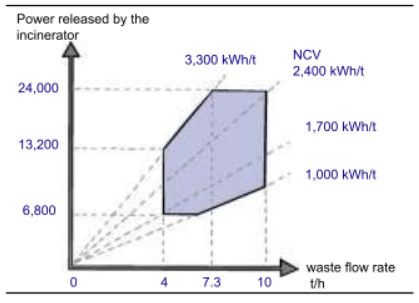
Sur l’axe des ordonnées, on trouve la puissance dégagée par le four; elle peut être donnée en kW. En abscisse, on trouve le débit de déchets en t/h. Les droites en pointillés représentent les différents PCI moyen qui dépendent de la nature des déchets.
Le point de fonctionnement du four doit être à l’intérieur du diagramme en trait fort.
Rappel : l’unité la plus couramment utilisée dans la littérature est la kcal/kg. Toutefois, dans le cadre de ces présents modules de formation, on préfère la mesurer en kWh/kg ou kWh/t afin de faciliter la comparaison entre l’énergie fournie par le procédé et l’énergie nette valorisée produite par un turboalternateur, qui est généralement exprimée en kWh.
Nous allons essayer de construire le diagramme pour mieux comprendre son interprétation.
Quantité de déchets injectés dans le four et la post-combustionLe fabricant donne les quantités de déchets maximale et minimale admissibles dans le four. Si l’on incinère une quantité de déchets inférieure à la quantité minimale, le feu dans le four sera instable et il sera difficile de maintenir la température réglementaire. Si l’on incinère une quantité supérieure à la quantité maximale, on dépasse les capacités du four, ce qui entraîne :
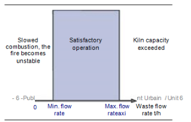
On peut alors définir un premier axe, l’axe des abscisses, sur lequel on place le débit des déchets dans le four. L’unité de débit est la tonne par heure, t/h.
Sur le graphique, la zone correcte de fonctionnement du débit doit être située entre le débit maximal et le débit minimal.
Le débit max est défini par la géométrie du four et par la qualité des réfractaires. Généralement, on se limite à 250 th.h-1.m-3 soit 290 kW/m3.
La puissanceLe four est limité en puissance. On ne doit pas dépasser cette puissance maximale car on dépasse alors la capacité de la chaudière vapeur et des équipements d’extraction des gaz de combustion. La chaudière ne pouvant absorber le surplus de chaleur, il s’ensuit une augmentation de la température du foyer et des gaz de combustion qui risquent d’endommager l’ensemble four-chaudière.
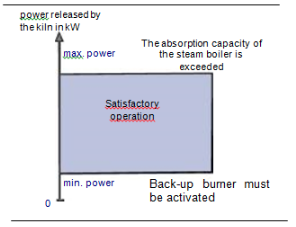
Il ne faut jamais dépasser cette puissance maximale, sauf pour une courte durée, et maintenir une surveillance attentive de tous les paramètres.
Si la puissance est trop faible, la température du foyer diminue : on ne peut maintenir les gaz de combustion à 850°C (ou 1100°C) pendant 2 secondes et il faut alors démarrer les brûleurs de soutien. On définit les limites de puissance du four sur le diagramme.
Sur le graphique, la zone de fonctionnement doit être située entre la puissance minimale et la puissance maximale.
Pouvoir calorifique des déchetsLe fonctionnement du four dépend aussi de la nature du déchet. On peut la définir par le PCI, donné en kWh/t. Pour des déchets de même nature, c’est-à-dire de PCI égaux, on peut noter que la puissance est proportionnelle au débit d’ordures.
\[ Puissance = PCI débit de déchets \]
Cela signifie que, pour le même type de déchet, si on multiplie par deux le débit d’ordures, on multiplie par deux la puissance. De même, si on multiplie par trois le débit d’ordures, on multiplie par trois la puissance. Il devient alors possible de tracer sur le diagramme la puissance en fonction du débit, la courbe représentant le PCI.
Prenons l’exemple d’un déchet dont le PCI est de 2000 kWh/t. Si l’on brûle 1 tonne de déchets par heure, on obtient une puissance égale à 2000 kWh/t x 1 t/h, soit 2000 kW. Si on brûle deux fois plus de déchets, pour 2 tonnes par heure on obtient une puissance égale à 2000 kWh/t x 2 t/h, soit 4000 kW.
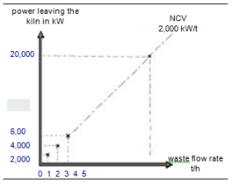
Si on brûle 3 tonnes par heure de déchets de même PCI, on obtient une puissance égale à 2000 kWh/t x 3 t/h, soit 6000 kW.
Traçons en pointillé sur le diagramme la courbe puissance-débit pour un PCI de 2000 kWh/t.
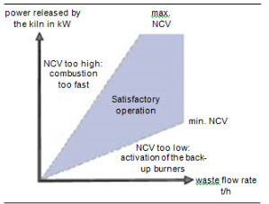
Un déchet dont le PCI est élevé est facile à brûler et dégage beaucoup de chaleur. Un déchet dont le PCI est faible est difficile à brûler et dégage moins de chaleur. On peut définir ainsi un PCI maxi à ne pas dépasser. Le papier, le plastique ont des PCI très élevés,; ils brûlent facilement et très rapidement. En conséquence, la température risque de monter dans le four au-delà de la limite maximale admissible. De plus, la quantité de gaz de combustion produits ne pourra être évacuée par le ventilateur d’extraction.
Un déchet avec un PCI trop faible, difficile à brûler, entraîne une chute de température du foyer. On doit alors enclencher les brûleurs d’appoint pour remonter les températures des fumées à 850°C. Ces limites sont définies sur le diagramme de fonctionnement.
Sur le diagramme, la zone de fonctionnement doit être située entre les deux droites PCI maximal et PCI minimal.
Attention : il faut garder à l’esprit que l’on parle de PCI moyen des déchets. Dans la réalité on injecte une combinaison de déchets liquides et solides de différents PCI.
Les déchets industriels dangereux sont classés en deux grandes catégories :
Pour les déchets solides et / ou pâteux il est difficile de déterminer précisément leur pouvoir calorifique du fait de leur hétérogénéité, il est couramment admis que cette catégorie à un PCI moyen de l’ordre de 2000 Kcal / kg.
Pour les déchets liquides, ils sont classés en 2 ou 3 catégories selon les centres de traitement et les seuils de classement varient également d’un centre à l’autre ; Ceux qui existent sur tous les centres sont :
Le PCI moyen peut être calculer de la manière suivante :
Assemblons maintenant sur un même schéma l’ensemble des différentes limites tracées. On obtient le diagramme de fonctionnement du four.
La zone hachurée correspond à la zone de fonctionnement normale du four. Chaque four possède un diagramme propre selon sa technologie et ses dimensions.
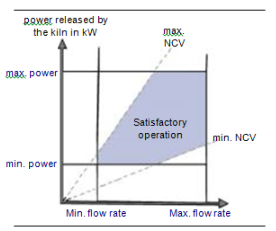
indiquéComme on l’a vu précédemment, la capacité du four est limitée par :
Grâce au diagramme, on peut définir ces limites et déduire la manœuvre à effectuer pour sortir de la zone de surcharge.
Exemple numérique : Comment reconnaître une surcharge? Dans la zone définie par les PCI 1160 et 2320 kWh/t pour atteindre la puissance maximale de la chaudière 16240 kW, le débit d’ordures enfourné est supérieur à 7 t/h. Pour ne pas dépasser ce débit maximal, il faut diminuer la puissance de la chaudière.
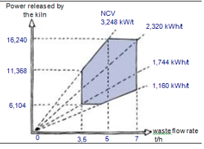
Dans la zone définie par les PCI 2320 et 3248 kWh/t, la puissance maxi sera obtenue avec un débit d’ordures inférieur à 7 t/h. Il est donc possible de « pousser la chaudière » dans cette zone; il suffit d’augmenter le débit de déchets. Il faut éviter de dépasser la puissance maximale du four.
Dans la zone définie par un PCI supérieur à 3248 kWh/t, on peut obtenir de la chaudière une puissance supérieure à 16240 kW avec un débit de déchets inférieur à 5 t/h, voire 3,5 t/h.
Si on augmente le débit de déchets, la puissance dépasse la puissance maximale et la température peut augmenter au-delà de 1000°C. Si le four et la PC ne sont pas conçus pour tenir à ces températures (épaisseur et qualité des réfractaires), cela peut les endommager.
De plus, un surplus de puissance est traduit par plus de combustion de déchet donc un volume de fumée supplémentaire à extraire. Ce surplus de chaleur ne sera pas absorbé par la chaudière qu’il faudra donc refroidir par plus d’eau sur la tour de refroidissement et qui se traduit par encore plus de volume de gaz à extraire. Le volume de gaz supplémentaire issu de la combustion des déchets dans le four sera autant de polluants supplémentaires à neutraliser et va indéniablement conduire à des dépassements des seuils réglementaire de rejet.
Pour toutes ces raisons, il ne faut pas dépasser la puissance thermique maximale de manière volontaire. Il se peut en cours de conduite que celle ci doit dépasser ou l’atteindre très rapidement à partir d’un niveau stable inférieur et redescendre au seuil initial après quelque minute. C’est une envolée de charge.
Tableau récapitulatif des installations SARPI/ONYX en France.
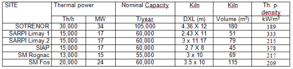
Ceci ne met pas en péril les installations mais va engendrer des dépassements des seuils des rejets réglementaires.
Par analogie à une voiture : La puissance thermique peut être définie à la vitesse où l’on roule et un deuxième indicateur la puissance de marche (PM) qui va donné combien de temps je roule à cette vitesse par rapport à combien j’aurais pu rouler sur un temps donné (période choisie : poste, journée, semaine…).
\[ PM = {puissance thermique moyenne sur l'équipe x nbr d'heures de fct sur la période}{Max. e. p. pour l'installation x nbr d'heures th sur la période} \]
Contrairement aux usines d’ordures ménagères où la production d’énergie est un des objectifs de rentabilité important. Pour les usines de traitement des DID la valorisation énergétique, certes importante d’un point de vue médiatique, reste secondaire du point de vue de l’exploitation. La chaudière est là pour assurer avant tout un refroidissement des gaz avant leur traitement de neutralisation.Pour régler l’allure de fonctionnement d’un four, on peut agir sur :
Les différents réglages sont réalisés afin d’obtenir une allure de fonctionnement aussi stable que possible. Ils évitent ainsi des régimes transitoires indésirables qui auraient pour conséquences :
Liquides : Les liquides sont injectés dans le four et la post-combustion grâce à des pompes. Il suffit de faire varier la vitesse de la pompe ou l’ouverture de la vanne pour augmenter ou diminuer les débits. Cette conduite est faite depuis la salle de commande en fixant des consignes de régulation (voir Ch 25).
Boues : Les boues sont injectés dans le four grâce à des pompes volumétriques (à piston). Pour faire varier les volumes injectés, il suffit de faire varier la cadence des pistons.
Solides : Les solides sont injectés par grappin ; le débit est définit par la cadence et l’ouverture du grappin. Il existe également des systèmes d’alimentation par tapis ou trémie peseuse. Là encore, c’est la cadence du système qui fixe le débit.
Le volume des déchets solides introduits dans le four dépend de cette cadence.
La masse des déchets dépend de leur volume et de leur densité. Le papier, le plastique sont peu denses : on dit qu’ils sont légers. Les déchets homogènes qui ont séjourné longtemps dans la fosse, deviennent plus denses : on dit qu’ils sont plus lourds. Pour un même volume, la masse introduite est plus importante dans le cas de déchets très denses.
La grande majorité des alimentations sur les fours de DD sont quantifiées par unité de masse (débitmètre massique sur ligne liquide, pesons sur grappin ou système d’alimentation solides).
La vitesse de rotation du fourLa rotation du four a deux effets :
Le dispositif de chargement des déchets pâteux permet au conducteur du four d’assurer une alimentation régulière en tête de four. L’oxydation de ce type de produit est favorisée par le brassage crée par la rotation du four. Ces déchets forment un talus dans le four et sont animés d’un mouvement oscillant généré par la rotation du four pour la montée et sous l’action de leur propre poids pour la descente. L’avancement axial des déchets dans le four est donné par la rotation et la pente du four (entre 2 et 3\
De plus, le moteur d’entraînement du four est équipé d’un variateur de fréquence ce qui permet au chef de quart d’augmenter ou de diminuer la vitesse de rotation. L’augmentation de la vitesse de rotation aura pour effet un brassage plus important donc une oxydation plus rapide mais à contrario un avancement axial plus rapide. Et inversement.
Quantité d'air injecté On peut régler la quantité d’air de chacun des ventilateurs de combustion. La quantité d’air de combustion dépend de la quantité et de la qualité des déchets présents dans le four. Le réglage du débit est considéré correct lorsque :Si le débit d'air est insuffisant :
Si le débit d'air est trop élevé :
Pour mieux comprendre les influences des réglages sur la combustion, on peut comparer les étapes de la combustion des déchets avec celles d’un feu de bois réalisé dans le foyer d’une cheminée. On décompose la combustion d’un feu de bois de la même façon, en trois phases :
Dans chacune des phases, on fait varier la quantité de bois à brûler ou la quantité d’air et on observe alors les phénomènes suivants :
itemize
itemize
Pour apprécier l’impact de l’action sur les organes de régulation de la combustion, examinons de manière théorique le détail des processus qui se déroulent lors de l’incinération des déchets dans un four rotatif.
Trois zones différentes peuvent être situées au sein des déchets présents dans le four :
Bien entendu, dans la pratique, les séparations entre zones ne sont pas aussi nettes en raison de l’hétérogénéité des déchets et de la rotation du four.
Dans tous les cas, la préparation de la charge, solide et liquide, est primordiale pour la bonne conduite du four. Les solides doivent être le plus homogène possible en termes de pouvoir calorifique. Leur granulométrie est compatible avec les moyens d’alimentation (taille de la goulotte) ; plus elle est fine, meilleure sera la combustion.
Les liquides sont classés et stocké en au moins deux catégories (Haut PCI et Bas PCI). Les bacs sont maintenus en agitation pour éviter les séparation de phase. Les conditionnés injectés en filière directe sont limité en poids afin de ne pas apporter d’un seul coup une quantité de calories susceptible de déstabiliser la combustion.
Zone de séchageDans cette zone, les déchets solides sont séchés et réchauffés jusqu’à leur point d’inflammation.
Le premier tiers du four (côté façade) sous l’action combiné de la rotation et de la pente agit comme une vis doseuse qui alimente en solides la zone de pleine combustion.
L’allumage des déchets est contrôlé par une sonde de température en façade.
C’est dans cette zone que se produit l’essentiel de la combustion. Les déchets, soumis au rayonnement du four, sont portés au-dessus de leur température d’inflammation et entrent en combustion.
Chambre de combustion finaleEn principe, la combustion des déchets est pratiquement terminée et seule la température des déchets non combustibles, c'est-à-dire les mâchefers, va diminuer. En termes réels, il n'y a pas de séparation réelle de la zone de combustion et une petite quantité de déchets en combustion peut rester ; les flammes seront visibles jusqu'à l'entrée du cendrier inférieur (notamment les flammes bleues provoquées par la combustion du charbon).
Post-combustionLa chambre de post-combustion est en fait un incinérateur vertical statique. Sont brûlés dans cet incinérateur : Les gaz dégagés lors de la combustion des déchets solides, Les liquides injectés dans la chambre de postcombustion via un brûleur alimenté en déchets et en combustible noble.
Les dimensions de la chambre de postcombustion sont conçues pour garantir qu'après l'injection d'air finale, les gaz restent dans cette chambre pendant plus de 2 s.
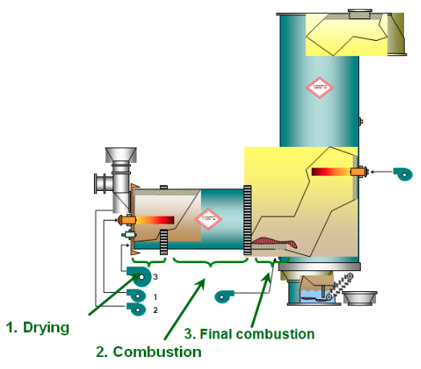
Dans les incinérateurs principalement alimentés en déchets liquides, plus de 70\
La chaleur est alors majoritairement transférée par les liquides et l'incinérateur peut être piloté très simplement à l'aide des boucles de régulation en adaptant les débits des différents liquides (HCV, LCV...) et en maintenant une consigne de température. Les déchets solides sont introduits dans l'incinérateur avec un débit régulier à partir d'un automate de pont roulant, en fonction de l'ouverture du grappin et des consignes de vitesse.
Incinérateurs alimentés en déchets solidesDans les incinérateurs principalement alimentés en déchets solides, plus de 50\
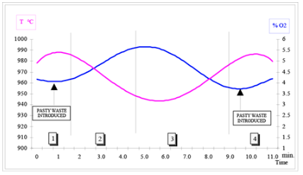
Pour les liquides, leurs injections permettent de maintenir un équilibre thermique dans le four. Les BPC et HPC servent de régulateur de température. Augmentation du déchet des BPC pour baisser la température Augmentation du déchet des HPC pour augmenter la température
La plus grande partie des liquides peut être brûlée en Post-Combustion. (Ex. : SEDIBEX au Havre brûle 4 T/h de solides dans le four et 4 T/h de liquides dans la PC).
Slagging modeCertains fours fonctionnent avec des déchets très calorifiques ou très fondants. Les températures de combustion sont volontairement très élevées (>1200°C) afin que les déchets fondent, ce qui garantie une excellente qualité de mâchefers (« vitrifiés »). Ces fours possèdent généralement des réfractaires très performants, et parfois des systèmes de refroidissement de virole (à l’air ou à l’eau). Ces systèmes de refroidissement permettent d’évacuer la chaleur et de figer une épaisseur de laves sur le réfractaire, le protégeant de cette façon.
Pour conduire le four, l’opérateur est assisté par des systèmes numériques de contrôle commande dite SNCC (ou conduite centralisée). Ces systèmes permettent de régler la charge du four, d’optimiser son chargement tout en contrôlant et en corrigeant les paramètres environnementaux d’émissions atmosphériques.
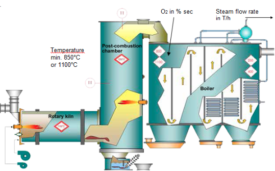
Pour assurer son rôle, la SNCC doit mesurer plusieurs paramètres représentatifs de la puissance et de la qualité de combustion :
Un ensemble de régulation sert à maintenir ces valeurs constantes. Ces valeurs sont appelées les consignes.
Pour atteindre les consignes, la SNCC agira sur les commandes de clapets d’air, de l’alimentateur, appelés organes de réglages.
Exemple : Si on veut maintenir la teneur en oxygène (\
Sur les fours, il existe plusieurs régulations :
Vous pouvez observer que toutes ces régulations ne sont pas indépendantes les unes des autres.
La régulation sert à régler le débit des déchets rentrant dans le four. Elle agit sur la cadence des systèmes d’alimentation (solides) ou l’ouverture des vannes (liquides). En fonction du type de déchets, l’opérateur peut choisir les temps de marche suivants :
Le conducteur de four a pour rôle de maximiser les débits de déchets tout en maintenant la qualité de la combustion (émissions, mâchefers).
Sur certains incinérateurs calés en liquides, il est possible d’asservir l’injection de certains liquides (HPC en particulier) à une consigne de température. Si la température du four augmente au dessus de la consigne (de 1150°C par exemple), le débit de HPC va diminuer (selon une formule propre proportionnelle ou autre voir Ch 25). Si la température du four diminue en dessous de la température de consigne, le débit de HPC va augmenter.
Les débit d’air ne sont généralement pas régulés automatiquement. La plupart du temps ils sont même fixes, et ce sont les débits de déchets qui sont optimisés en fonction de l’air disponible.
Il existe une diversité importante dans le type d’unités d’incinération de déchets dangereux en fonctionnement. En effet, selon le constructeur, le type de four et l’ancienneté de l’installation, différentes générations de fours ont été installées. En ce qui concerne le principe de régulation, on retrouve trois principales familles d’installation :
Les deux dernières régulation sont employées dans le domaine des ordures ménagères, où la vente d’énergie est le principal revenue de l’activité.
Régulation par la température du fourC’est l’un des paramètres principaux du fonctionnement de nos fours. C’est, de plus un paramètres réglementaire. La principale régulation se fait par une lecture et un enregistrement de la température, généralement au milieu de la post-combustion, et par utilisation de cette donnée pour contrôler (via un régulateur) un ou plusieurs paramètres suivants :
Les paramètres qui ne sont pas reliés au régulateur sont contrôlés et ajustés manuellement par l’opérateur.
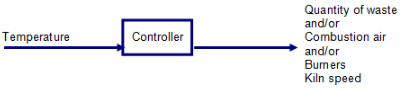
Sur la plupart des installations, l’ensemble de ces réglages sont manuels : la diversité des déchets ne permet pas de régulation simple.
Contrôle en fonction du débit de vapeurCe genre d’installation possède un système de récupération d’énergie. L’opérateur ajuste la régulation pour que celle-ci maintienne un débit de vapeur constant à une pression donnée.
Les enregistrements de débit et de pression sont ainsi transmises au régulateur, lequel agit sur les paramètres du process pour établir et maintenir la consigne demandée par l’opérateur.
Le régulateur enregistre un signal d’entrée (pression et/ou débit) et détermine un ou des signaux de sortie pour contrôler les paramètres du procédé qui ont une influence sur le débit de vapeur. Ainsi le régulateur peut agir sur une ou plusieurs de ses variables :
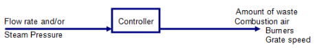
Régulation par débit de vapeur et autres variablesLes installations modernes d’incinération d’ordures ménagères doivent optimiser le rendement thermique et respecter des normes d’émission très strictes. Plusieurs variables d’entrée sont prises en compte :
Le système de régulation considère plusieurs ou toutes ces variables comme des signaux d’entrée. Il les analyse et calcule automatiquement la valeur optimale de certains paramètres influents sur l’allure du procédé de façon à établir ou à maintenir les points de consignes affichés. Ces paramètres qui recevront un signal de sortie émis par le régulateur peuvent être plusieurs ou tous les paramètres de la liste suivante :
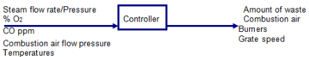
Principes générauxLes systèmes de régulation permettent de choisir un mode de contrôle manuel du four si l’opérateur le désire, par exemple en période de démarrage ou durant des phases transitoires pour lesquelles la régulation automatique parvient difficilement à maintenir la stabilité du procédé. Les systèmes de régulation permettent aussi un fonctionnement en mode dégradé, c’est-à-dire seulement avec une partie des automatismes.
L’opérateur doit toujours être en mesure de reprendre manuellement le contrôle du procédé en agissant manuellement sur :
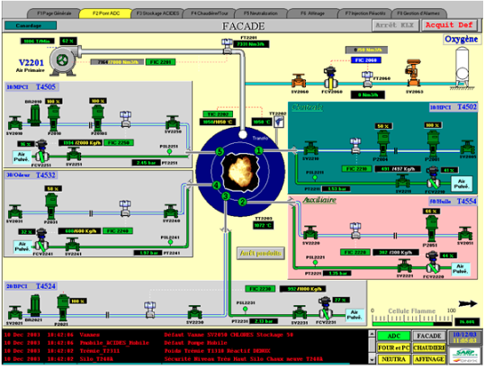
{Vue du système de supervision d'injection liquide par SARP Industries Limay}Pour contrôler la combustion à l’intérieur du four, il est utile de visualiser l’état du feu à travers les regards sur site :
La combustion est optimale lorsque l’opérateur conduit le four au maximum de ses possibilités et conformément à la réglementation.
En sortie de four, il ne doit rester aucun imbrûlé. Dans le cas contraire, c’est le signe d’une mauvaise combustion. Dans ce cas, il faut réajuster le débit des déchets (équilibre liquides / solides) et l’air de combustion.
La température dans la Post-Combustion est comprise entre 900 et 1400°C, température maximale fonction des caractéristiques de la PC (réfractaires). La température du four est inconnue, mais varie entre 850 et 1200°C. Lorsque le four atteint des températures trop élevées, les déchets entrent en fusion et coulent en lave, entraînant une usure rapide des réfractaires. De plus les cendres volantes elles aussi entrent en fusion et certaines vont se coller sur les parois de la chaudière, entraînant une diminution de l’échange thermique. La température peut se modérer en augmentant l’excès d’air ou en augmentant la quantité de déchets à bas PCI.
La teneur en monoxyde de carbone (CO) doit être la plus faible possible et toujours en dessous de la valeur imposée par la réglementation. D’après celle-ci, le taux de CO (en moyenne ½ horaire doit être inférieur à 100 mg/Nm3, mais il est préférable de se situer à des valeurs inférieures, soit moins de 50 mg/Nm3 (qui est la valeur limite d’émission pour la moyenne journalière).
Le débit de vapeur doit être constant et proche de la consigne imposée par l’opérateur. Un débit ou une pression de vapeur instable sont le signe d’une mauvaise combustion.